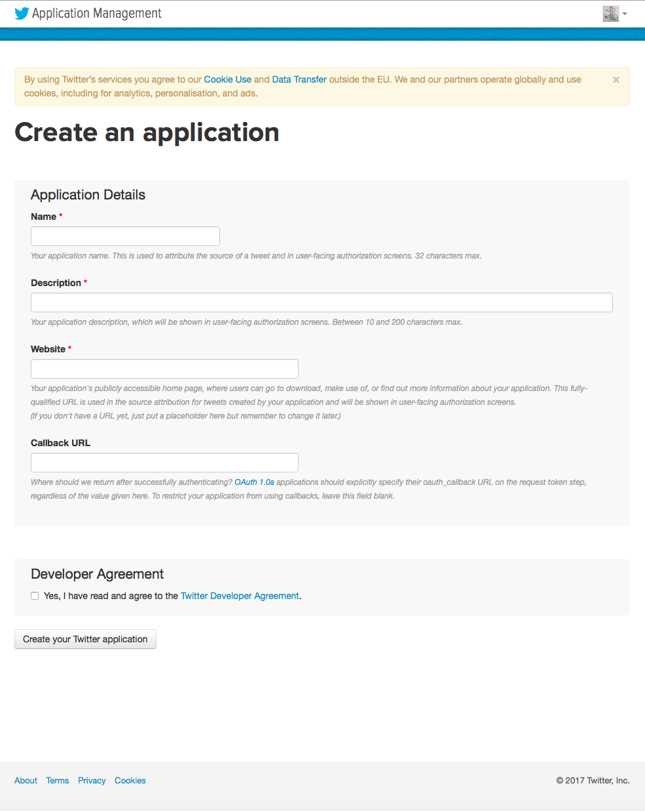
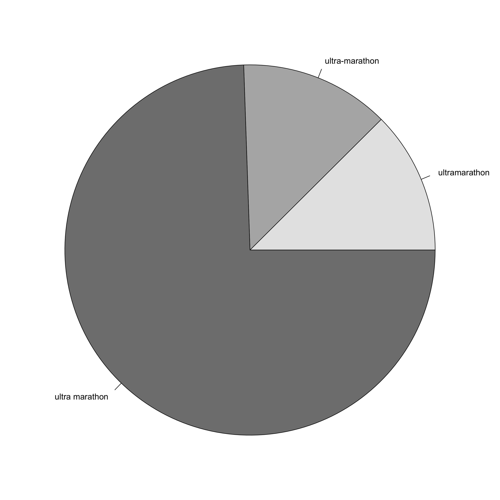
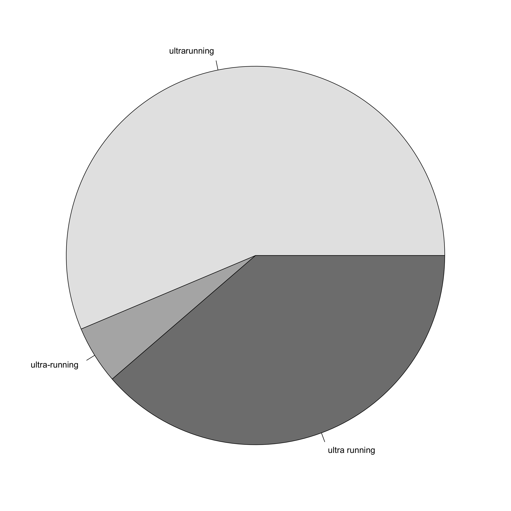

Ultramarathon, Ultra Marathon or Ultra-Marathon?
 © Freedom Racing
© Freedom Racing
Note
This blog post was originally written in 2017 for a less formal personal blog with a focus on ultramarathon running, which is a hobby that I am quite passionate about. I have decided to include all of my data science related blog posts here to keep things centralised, but please excuse the more informal language used throughout.
Welcome!
Well, welcome to my new blog I guess. I have had a bit of a hiatus from writing recently but I am trying to get back into the habit over on my running-related blog http://constantforwardmotion.blogspot.com. Over there I will be mainly moaning about my injury woes (and maybe talking about some of my more ridiculous races if I ever get back to being able to run again), but this blog is a little bit different. In the past I have played around with various bits of data for some quite interesting (I think anyway) posts (e.g. this post looking at the 2013 Centurion Running Thames Path 100 mile race). I am a data analyst by trade, and I am about to start a whole new stage of my career, working as a Senior Post Doc at the University of Portsmouth where I will be building my own Bioinformatcs lab. Scary stuff.
Anyway, I decided to set this blog up as a more technical place to play around with various data analysis techniques, new algorithms, new packages, etc. Since it is something that I am pretty passionate about, there is likely to be a bit of a running theme throughout, but really I will be looking at data from a whole load of different sources. I often play around with “fun” challenges like those set by Project Euler and Kaggle, so I figured that it may be useful for me to put some of these out there in case my dumb mistakes when learning these things can help somebody else in the future. As the great philosopher Jake from Adventure Time, once said:
Dude, sucking at something is the first step towards being sorta good at something
So, here is the first post in what I hope will become a regular source of potentially interesting data wrangling. I just wanted to do something simple to start with, and one thing that I have always wanted to play with is the Twitter API for accessing the myriad completely valid and interesting opinions of the millions of Twitter users out there… Hopefully I will keep away from the shadier parts of the interwebz, but in all seriousness there is a huge amount of useful stuff floating around out there.
So quite why I picked this particular question as my first post I have no idea. With billions of opinions and social interactions available to me, I have chosen to answer the following rather inconsequential question:
Is it an “Ultramarathon”, “Ultra Marathon” or “Ultra-Marathon”?
My idea of a good time is running a really, really long way, usually for a whole day or sometimes even more. Any race over a marathon in distance is called an “ultramarathon” - i.e. it is beyond the marathon. Now, there is a huge amount of baggage attached to this, and some people seem to really get their panties in a bunch over the term. Does it “count” as an ultramarathon if I run back to the car after a marathon? Does it “count” as an ultramarathon if I walk most of it? Does it “count” as an ultramarathon if I run a marathon a day for a whole week? There’s a lot of questions about “counting”, but I’ve never been very good at counting personally (says the mathematician…). I actually really dislike the word myself as it smacks a little of elitism, and I prefer to just think of it as running. A 10K is a running race, a marathon is a running race, and a 100 miler is a running race. Let’s just leave it at that.
Anyway, one thing that I have never seen definitively answered is what the correct nomenclature should actually be, and I find myself switching willy nilly between the three possible spellings as the winds change. I’ve probably used all three in this post. So I thought that I would let the people speak, and see what the general consensus is of the Twitterati. And let’s face it, no ultrarunner worth their salt would run without Tweeting about it. So let’s take a look at which term is used most often on Twitter and settle this mass debate that I am having with myself (chortle) once and for all.
Setting up the twitter API
Twitter uses OAuth as a way to control programmatic access to its information without requiring passwords. Essentially, Twitter grants you an access token which is used to grant you access to the client information via a web service without actually giving you direct access to the client machine. It’s pretty easy to set up. Once you have a Twitter account set up, go to https://apps.twitter.com and click on the “Create New App” button. This will bring up the following page:

I filled this in with details of this blog, and created a new app. Note that to avoid errors further down the line, you need to set the “Callback URL” field to http://127.0.0.1:1410 which will return to your localhost on port 1410 following authentication. Press “Create your Twitter application” to create your app. This will take you to a page with information about your new app, including a tab at the top of the page called “Keys and Access Tokens”. The “API Key” and “API Secret” can then be used to access the API.
One important change to make to the basic settings is to click on the “Permissions” tab and make sure that your app is set up to have permissions to “Read, Write and Access direct messages”. Be sure to regenerate your access tokens after making any changes.
Since R is my go-to analysis package, I will be using the TwitteR package from Jeff Gentry to access the API. You can also access through scripting languages like perl and python, which I will likely explore in the future. You can install TwitteR from the Comprehensive R Archive Network by doing the following:
{% highlight r %} install.packages(“twitteR”) {% endhighlight %}
Or alternatively you can install the less stable, but more up-to-date, development version from GitHub:
{% highlight r %} install_github(“geoffjentry/twitteR”) {% endhighlight %}
This requires the devtools package to be installed as well.
We should now be set up, but actually I found that I also needed to install some additional packages so that OAuth credentials can be correctly captured in the browser-based authentication:
{% highlight r %} install.packages(“httpuv”) install.packages(“httr”) {% endhighlight %}
Now we need to set up our authorisation (put your API key and secret in place of these placeholders):
{% highlight r %} library(“twitteR”) setup_twitter_oauth(“API key”, “API secret”) {% endhighlight %}
This will open up a browser session where you can authenticate your API app. After this, close the browser and you are ready to go!
Ultramarathon, Ultra Marathon, or Ultra-Marathon?
So now we are all set up and we can take a look at how to access the API. The workhorse of the twitteR package is the searchTwitter() function. This can search for something like a hashtag or key word, and can use basic boolean logic such as AND (+) and OR (-). The API actually only allows you to access information from a short time in the past, so we can only get Tweets from the last week or so. So let’s get the most recent Tweets relating to ultrarunning and count how many Tweets over the last few days have used the three different terms:
{% highlight r %} library(“twitteR”) numtweets <- 500000 um_tweets_all <- searchTwitter(“ultramarathon|ultra marathon”, n = numtweets) {% endhighlight %}
{% highlight text %}
Warning in doRppAPICall(“search/tweets”, n, params = params,
retryOnRateLimit = retryOnRateLimit, : 500000 tweets were requested but the
API can only return 961
{% endhighlight %}
{% highlight r %} um_tweets_trim <- strip_retweets(um_tweets_all, strip_manual=TRUE, strip_mt=TRUE) um_tweets_text <- sapply(um_tweets_trim, function (x) x$getText()) um_tweets_text <- um_tweets_text[grep(“ultramarathon|ultra marathon|ultra-marathon”, um_tweets_text, ignore.case = TRUE)] um_count <- NULL for (t in c(“ultramarathon”, “ultra-marathon”, “ultra marathon”)) { um_count[[t]] <- length(grep(t, um_tweets_text, ignore.case = TRUE)) } par(mar = c(0,0,0,0)) pie(um_count, col = c(“grey90”,“grey70”,“grey50”)) {% endhighlight %}

Let’s look at this code. After loading the twitteR package and specifying the number of Tweets to load, we access the Twitter API using searchTwitter and load in the 500000 most recent Tweets with the terms “ultra”, “running”, or “ultrarunning” in them (there will be many fewer than this, but I want to capture every Tweet possible). This produces a list of 961 objects of class status, which is a specially defined reference class as a container for Twitter statuses. Next we strip out all of the retweets to leave 585 Tweets, then pull out the text from the list objects (sapply() applies the accessor function getText() to all elements of the list). Since I am only interested in three specific terms, I use regular expressions to look only at Tweets containing one of these terms (giving 316 Tweets), and then count how many Tweets contain each of the three specific terms. Finally I generate a pie chart of the results (yes, yes, I know - I hate pie charts as well).
A couple of things here. First of all, there are a lot of retweets. Of the 961 Tweets originally analysed, only 585 remain after removing the retweets. This means that 39.13% of these Tweets were retweets. Man, we ultrarunners aren’t very original are we? Unfortunately this therefore drastically reduces the number of Tweets that I am analysing. Secondly, because of the way the pattern matching is done we end up with a lot of Tweets with “ultra” or “running” in them that don’t match any of the three specific terms that I am looking at here. Also, this counting may be double counting some Tweets if both versions are used in a single Tweet. But I can’t be bothered taking such stupidity into account right now! ;)
So with these caveats in place, it seems pretty clear that the correct term is most definitely “Ultra Marathon”. So there you go.
Ultrarunning, Ultra Running or Ultra-Running?
Okay cool. So we know how to define the event. How about the act of running an ultra marathon? So let’s do the same again, this time looking at whether I should be saying “ultrarunning”, “ultra running”, or “ultra-running”. The code is practically identical, just using slightly different words in the regular expression:
{% highlight r %} ur_tweets_all <- searchTwitter(“ultrarunning|ultra running”, n = numtweets) {% endhighlight %}
{% highlight text %}
Warning in doRppAPICall(“search/tweets”, n, params = params,
retryOnRateLimit = retryOnRateLimit, : 500000 tweets were requested but the
API can only return 11984
{% endhighlight %}
{% highlight r %} ur_tweets_trim <- strip_retweets(ur_tweets_all, strip_manual=TRUE, strip_mt=TRUE) ur_tweets_text <- sapply(ur_tweets_trim, function (x) x$getText()) ur_tweets_text <- ur_tweets_text[grep(“ultrarunning|ultra running|ultra-running”, ur_tweets_text, ignore.case = TRUE)] ur_count <- NULL for (t in c(“ultrarunning”, “ultra-running”, “ultra running”)) { ur_count[[t]] <- length(grep(t, ur_tweets_text, ignore.case = TRUE)) } par(mar = c(0,0,0,0)) pie(ur_count, col = c(“grey90”,“grey70”,“grey50”)) {% endhighlight %}

There are a lot more Tweets relating to ultra “running” compared to ultra “marathon”, with 11984 Tweets in the starting data set. However, again we lose a lot of Tweets through retweets leaving us with only 2112 Tweets to play with. After trimming out Tweets that don’t follow the format that I am looking at here, we are left with only 179 – even less than in the last analysis.
In this case, it is less clear cut, and whilst the single word term “ultrarunning” is used most often, the two word “ultra running” is not far behind. Damn, I wanted a clearly defined outcome, but I guess I will let you off whichever one you choose to use. But god help anybody who chooses to hyphenate either term…
Word Cloud
Since we have these Tweets available, let’s generate a word cloud to see what other terms are being talked about in relation to ultra marathons and ultrarunning. A word cloud takes some text and works out the most common words within it, then represents them in a cloud of words (funnily enough) with more common words being more prominent. Here we use the text mining package tm for identifying and processing unique words from these Tweets, and the wordcloud package for plotting them. The Tweets are loaded into a Corpus object, and various mappings are performed to remove irrelevant text like punctuation, as well as commonly used words in English like I, We, and, the, etc. Note that I have converted the encoding of all of these Tweets into UTF-8 encoding as I was having issues using the tolower() function when some Tweets contained non-UTF-8 characters. I have coloured the plot using the brewer.pal() function from the RColorBrewer package, which in this case generates a palette of 9 equally spaced colours ranging from Red to blue (via white). The parameters here will plot a maximum of 1,000 words, and will only consider a word if it is present more than 5 times. By not using a random order, the most prominent words are plotted at the center of the cloud:
{% highlight r %} library(“tm”) library(“wordcloud”) library(“SnowballC”) all_tweets <- c(ur_tweets_text, um_tweets_text) all_tweets <- iconv(all_tweets, “latin1”, “ASCII”, sub = “”) ## Convert encodings cloud_dat <- Corpus(VectorSource(all_tweets)) ## Create Corpus cloud_dat <- tm_map(cloud_dat, PlainTextDocument) ## Make plain text cloud_dat <- tm_map(cloud_dat, content_transformer(tolower)) ## Convert to lower case cloud_dat <- tm_map(cloud_dat, removePunctuation) ## Remove punctuation cloud_dat <- tm_map(cloud_dat, removeWords, stopwords(“english”)) ## Remove common English words par(mar = c(0,0,0,0)) wordcloud(cloud_dat, max.words = 1000, min.freq = 5, random.order = FALSE, colors = brewer.pal(9, “RdBu”)) {% endhighlight %}
Kind of what you would expect, with ultra, marathon, running, ultramarathon, and ultrarunning being most prominent. training is also pretty common, so it’s good to know that there is some of that going on between Tweets. I’m also pleased to see that tom is quite enriched, which I can only assume to be Tom from Bognor’s take-over of the internet. It’s also nice to see people talking about shorts, but come on people – it’s always shorts weather!
Final Word
This has been quite useful for me to get the hang of using the Twitter API, and I hope it has been a little interesting or useful for some of you. I am hoping that this will kick off regular use of this blog, and I will try and update it more regularly along with my less technical running blog as I start using it to play with new toys in my work. And hey, at least now you know that they are called Ultra Marathons and that I love Ultrarunning. So we’ve all learned something today. And knowing is half the battle.
Sam Robson
Lead Bioinformatician at the Centre for Enzyme Innovation
Lead Bioinformatician at the Centre for Enzyme Innovation